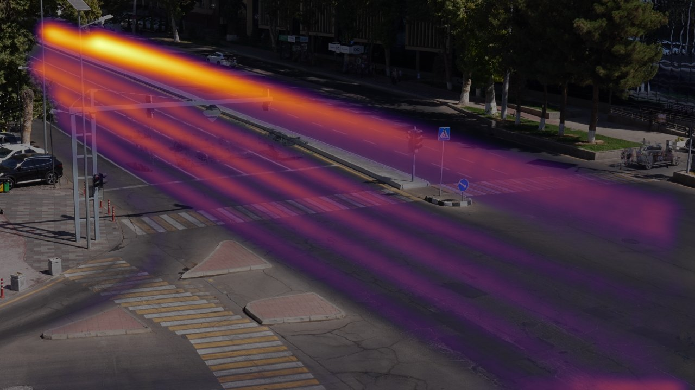
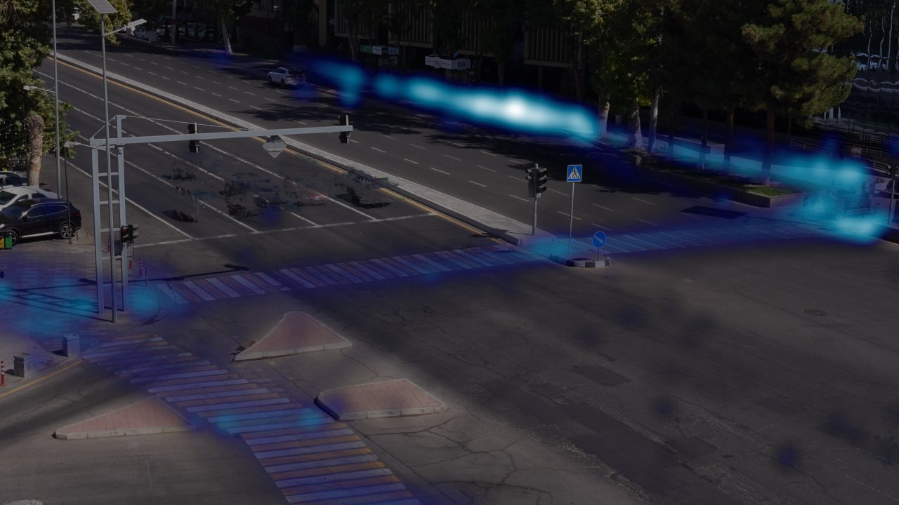
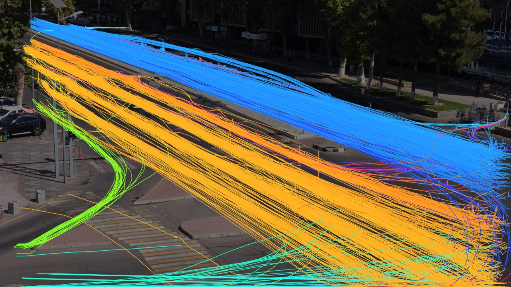
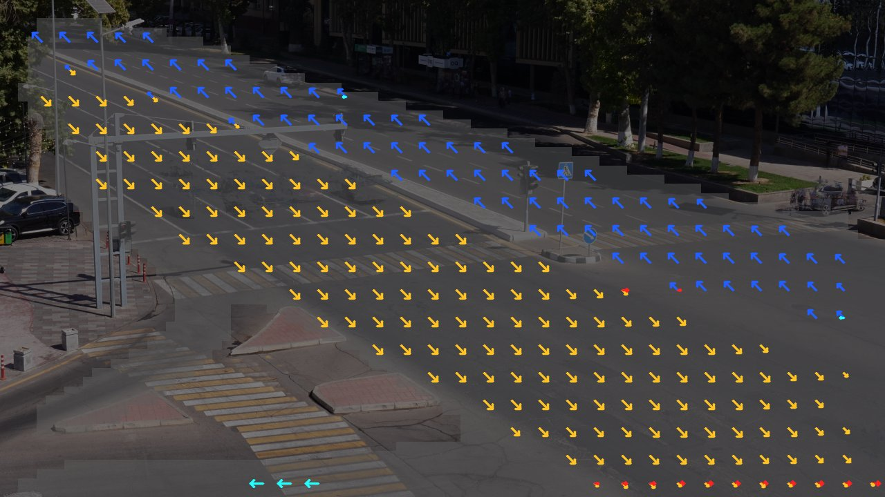

Our entry for the WIUT Hackathon 2026 CV track. From a fixed 4K CCTV camera we detect jaywalking, cars not yielding at crossings, red-light runs, stop-line violations, stopped vehicles and congestion, and we output an accident-risk score for every frame. It runs offline: YOLO11 + ByteTrack for road users, the traffic light state read from the lamps in the image, and rules on the trajectories.
Who built what.
Input: one .mp4 from a fixed camera. Output: [start_sec, end_sec, label] segments over 14
classes, scored by macro-F1 at temporal IoU 0.3 / 0.5 / 0.7. Separately, a causal risk score must rise
before an accident. We have four unlabeled sample clips (no training labels for this camera), so we
invest in things that generalise without labels: a strong pretrained detector, a tracker, an accurate model of
this scene, and rules whose thresholds have physical meaning.
Blue outline = learned (pretrained weights, no fine-tuning); yellow = hand-written rules; grey = geometry and statistics measured from the sample videos.
The estimator never opens the file and never touches Part A. It runs its own detector + tracker on every 6th streamed frame (5 Hz, 960 px) and scores:
Hazard -> logistic calibrated so normal traffic stays below the 0.5 alarm threshold, with a 1 s half-life decay.
| Component | What | Licence | Why |
|---|---|---|---|
| Detector | Ultralytics YOLO11m, COCO-pretrained, fp16 | AGPL-3.0 | Best accuracy/latency on a T4 at 1280 px; the far sidewalk has 20-px pedestrians. |
| Tracker | ByteTrack (Ultralytics implementation) | MIT / AGPL-3.0 | Uses low-confidence boxes, so tracks survive occlusion behind buses. |
| Training data | COCO 2017 (via the pretrained weights); no fine-tuning | CC BY 4.0 | No labels exist for this camera; we invested in scene modelling instead. |
| Scene model | Flow field + road mask learned from the 4 sample clips; crossings / stop line / lamp boxes measured by hand | own work | The camera never moves, so geometry is a constant. |
All numbers are computed by tools/eda.py from our own detections and tracks.
Two clips are midday (hard sun, long shadows), C3902 is early evening and C3905 is dusk (about half the brightness). Brightness is flat within each clip. The dusk clip is where far pedestrians are hardest to detect, and CLAHE-normalised registration still matches it to the reference view.




Every sample video, annotated by our own renderer: boxes coloured by class, active events as banners, the signal lamp state (dot) and the live risk bar. Click an event on the timeline or in the table to jump there.
What a city traffic centre would watch: events per class and per minute, across all sample footage.
Upload an .mp4 from this camera (any resolution, up to 3 minutes and 200 MB) and get back the events,
the annotated video, the timeline and the risk curve. The demo runs in your browser: the video is never uploaded.
It uses the same scene map, rules and risk model as our submission with a lighter detector (YOLO11n instead of YOLO11m),
so results can differ slightly from predictions_samples.json. Expect roughly 1-3x the clip length on a laptop;
short clips are best. No clip at hand? Use the sample (20 s, contains a red-light run at 0:04):
or download it.